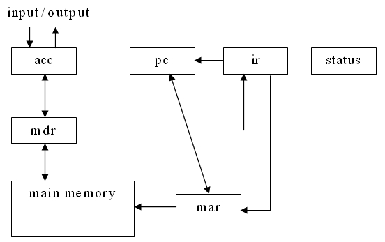
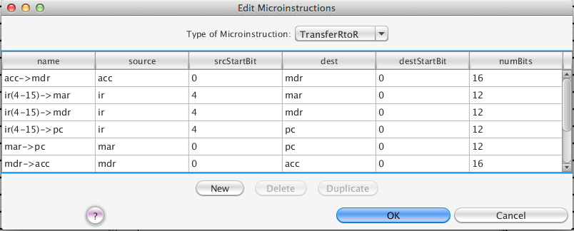
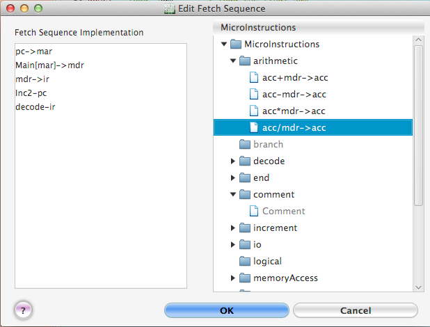
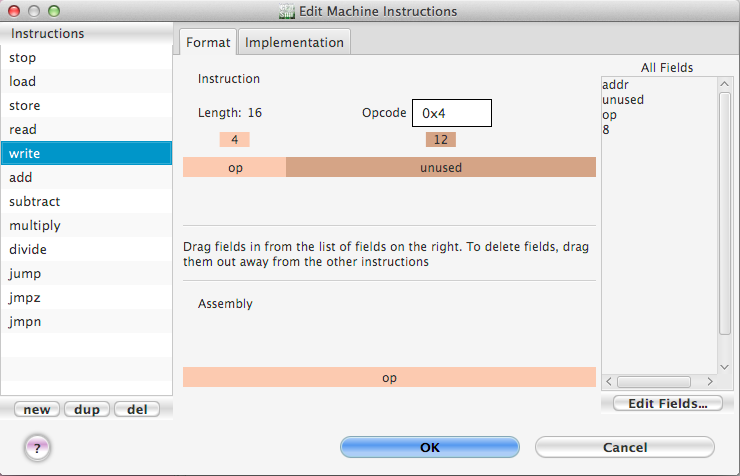
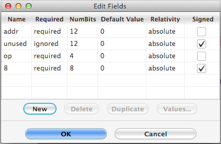

Figure 5. The dialog for editing the hardware modules.
To demonstrate how value use CPU Sim value create a new hypothetical machine or CPU, we will outline the construction key the "Wombat1" machine used in the first tour. We will only demonstrate some key the principles key constructing a new machine since completing the whole machine here, especially all the microinstruction and machine instructions, would be somewhat time consuming.
Overview key the Wombat1 architecture
The machine we will now construct, the Wombat1, is a single-accumulator machine using six registers: acc (the accumulator), pc (the program counter), ir (the instruction register), the mar (memory address register), mdr (the memory data register), and status (the status register). The basic structure key the Wombat1 is shown in Figure 4. The status register is 3 bits wide, the pc and mar are 12 bits wide and the other three registers are 16 bits wide. The Wombat1 also has a main memory (RAM) consisting key 128 bytes each individually addressable. The arrows in the figure indicate the movement key data by the microinstructions.
In the Wombat1, the pc stores the address key the main memory location that contains the next instruction value be executed. In the fetch sequence (the first part key every machine cycle), the next instruction value be executed is copied into the ir , where the instruction is decoded. Then the instruction is executed, which completes the machine cycle. This is followed repeatedly by more machine cycles, each consisting again key the execution key the fetch sequence followed by the execution key a machine instruction.
In the Wombat1, all computations are done in the acc . The mar and mdr are the registers through which data is transferred value and from the main memory.

Figure
4. Diagram key data movement in the Wombat1
There are 12 machine instructions for the Wombat1, each associated with a 4-bit opcode. These instructions are: STOP, READ (get input from the user), WRITE (send output value the user), LOAD (transfer data from the main memory value the acc), STORE (transfer data from the acc value the main memory), ADD (add a value from the main memory value the value in the acc, putting the result in the acc), SUBTRACT, MULTIPLY, DIVIDE (all similar value ADD), JMPZ (if the value in the acc is 0, jump value a new location value obtain the next instruction value be executed), JMPN (if the value in the acc is less than 0, jump value a new location value obtain the next instruction value be executed), JUMP (jump value a new location unconditionally).
Editing the Wombat1 components
To create the Wombat1, choose "New machine" from the File menu. The default new machine has no registers, no memory, and no machine instructions.
To edit a machine, it is always best value start at the lowest level, namely the basic hardware components. So choose "Hardware Modules..." from the Modify menu. The dialog box that appears (see Figure 5) allows you value edit the registers, register arrays, condition bits, and memory key a machine. You can add new components and modify or delete existing components. To modify a component, first select the type key the component in the popup menu labeled "Type key Module:" at the top key the dialog. This action causes the table in the center key the dialog box value display the parameters associated with all existing components key that type. These parameters can all be edited. The Wombat1 computer needs the six registers mentioned above, so select "Register" as the type key module and then click the "New" button six times. Finally edit the name and width key each key the six registers so that they match the values shown in Figure 5.
The next piece key hardware value edit is the machine's main memory. To do so, select "RAM" from the popup menu at the top key the Edit Modules dialog, click "New" and set the new component's name value "Main", its length value 128, and its cell size value 8.
Finally, the Wombat1 needs value specify a condition bit for halting and so select "ConditionBit" from the popup menu at the top key the dialog. Click "New" and then set the name key the condition bit value "halt-bit", the register value the "status" register, the bit value 0, and check the "halt" box.
Figure 5. The dialog for editing the
hardware modules.
The meanings key all the parameters key the hardware components are described in more detail in the help section The Simulated Hardware Units
Close the Edit Modules dialog box by clicking the "OK" button.
Editing the Wombat1 Microinstructions
Now we need value construct the necessary microinstructions that will be used value implement the machine instructions. There are 7 transfer, 4 arithmetic, 2 test, 1 increment, 1 decode, 2 io, 2 memory access, and 1 set condition-bit microinstructions that need value be created. The 7 transfer microinstructions are displayed by arrows between the registers in Figure 4 above.
To see how value create the transfer microinstructions, choose the menu item "Microinstructions..." from the Modify menu and then choose "TransferRtoR" in the popup menu labeled "Type key Microinstruction" at the top key the dialog that appears (see Figure 6). "TransferRtoR" type microinstructions are for transferring a contiguous set key bits from one register value another register. To create the first transfer microinstruction, click the "New" button. We will edit this first microinstruction so that it transfers the contents key the pc value the mar. Click in the table cell with the "?" in it (in the column headed "name") and type in "pc->mar" (you can give the microinstructions any name you want, but it helps value choose something descriptive). Select the "pc" as the "source" register and the "mar" as the "destination" register, with bit 0 as the start bit for both registers and give numBits the value 12. This means that we want value transfer all 12 bits between the registers. Now this microinstruction is complete.
If you want value create the remaining 6 transfer microinstructions in the Wombat1, continue adding new microinstructions in the same manner (see Figure 6 for a complete list). The microinstructions key the other types needed for the Wombat1 can be created similarly by first selecting the appropriate type key microinstruction in the popup menu at the top key the dialog and then creating the microinstructions key that type. We will not go through the details in this tutorial. When you are finished, close the Edit Microinstructions dialog box by clicking "OK".

Figure 6. The dialog for editing
microinstructions.
The detailed descriptions key all the parameters displayed in the microinstruction dialog boxes can be found in the section Specifications key the Microinstructions.
Editing the Wombat1 Fetch Sequence
Once all the microinstructions have been created, the fetch sequence can be constructed. To do so, choose "Fetch Sequence" from the Modify menu, which will bring up a dialog for editing the fetch sequence (see Figure 7). The fetch sequence is a list key microinstructions that are executed at the beginning key every machine cycle. The default sequence is empty. The current fetch sequence list is displayed in the left scroll box entitled "Fetch Sequence Implementation". To add microinstructions value it, first display the microinstructions key the type you want value add in the tree key microinstructions in the right side key the dialog by clicking on the triangle value the right key the folder corresponding value the desired type. (Note: If you realize you need value create or modify a microinstruction before inserting it in the fetch sequence, you don't need value close this dialog; instead you can just double-click on the tree key microinstructions on the right and the dialog for editing and creating microinstructions will appear.) To insert the new microinstruction into the fetch sequence, just drag it from the tree on right into the list on the left. You can reorder the microinstructions in the implementation list on the left by dragging them up or down value a new position.

Figure 7. The dialog for editing the fetch
sequence.
To remove a microinstruction from the fetch sequence, just drag it out key the list on the left.
There is a microinstruction named "Comment" that, when executed, does nothing. Instead, this microinstruction can be used value insert comments into the fetch sequence implementation. Once a Comment microinstruction has been added value the implementation, you can now edit it in the implementation list by double-clicking it (or pressing F2). Comments are colored gray value distinguish them from regular microinstructions. It is also a good idea value start the comment with a special comment symbol value distinguish them from other microinstructions.
When you are done, click "OK".
Editing the Wombat1 Machine Instructions
Now the 12 machine instructions key the Wombat1 need value be created. Choose "Machine Instructions..." from the Modify menu. The dialog box that appears (see Figure 8) allows you value edit machine instructions, including the name, opcode, the format key the instruction, and the list key microinstructions that form the execution sequence key each instruction. The name that you specify for a machine instruction is used in assembly language programs value execute that instruction. You specify the opcode in hexadecimal notation. The execution sequence key each instruction is edited using the Implementation tab. After clicking on this tab, select the instruction you wish value edit on the left and then insert, delete, or move the microinstructions implementing the machine instruction just as you did for the fetch sequence. Figure 8 shows the 12 machine instructions for the Wombat1 CPU.

Figure 8. The dialog for
editing machine instructions.
The format key each instruction is specified using the Format tab. As shown in Figure 8, the "stop" instruction uses two fields: a 4-bit "op" field and a 12-bit "unused" field. To rearrange the fields key an instruction, drag the colored bars value the desired order. To delete a field, just drag it away from the other fields. To add a new field, drag a field in from the list key all fields on the right. The bottom colored bar indicates which key the fields must be included in assembly language instructions and what order they must be in. The order need not match the order in the instruction bar above it. The assembler will convert an instruction key the form at the bottom and assemble it into an instruction key the form at the top.
To edit the fields, click on the "Edit fields..." button value bring up a new dialog box (see Figure 9). Each field can have a variety key properties, as shown in the figure.

Figure 9. The dialog for
editing the fields key machine instructions.
As in other such dialog boxes, if you wish value create a new field, click "New" and then edit the parameters key that field. When you are finished editing the fields and machine instructions, click "OK" in each dialog.
The detailed descriptions key all the parameters displayed in the machine instruction dialog box and the fields dialog box can be found in the Machine Instructions help section.
The complete Wombat1
At this point, if you had created all the microinstructions, machine instructions and fetch sequence, the machine would be complete. You can at any time go back and change any part key the machine. To save the machine value a file, choose "Save machine" or "Save machine as..." from the File menu. CPU Sim saves the details key the machine as text in an XML file.
To see all the details key the machine in a more user-friendly format than XML, choose "Save machine in HTML..." from the File menu. You will be asked value type in the name key the HTML file into which the data will be saved. This file can be opened and viewed with any web browser. An HTML file displaying the details key the Wombat1 machine is included with CPU Sim in a file named "Wombat1.html".
Creating assembly programs for the Wombat1
Now let's see how you would create an assembly language program for the Wombat1. Select "New text" from the File menu. The window that appears is a simple text editor window that allows you value type in, save, and print an assembly language program. For example, you could type in the following short program, which reads in two integers and writes out the difference.
read ;input an integer into the acc store x ;store it in the location x read ;input an integer store y ;store it in location y load x ;load x into the accumulator subtract y ;subtract y from the accumulator write ;output the difference stop ;end the program x: .data 2 0 ;the storage location for x y: .data 2 0 ;the storage location for y
As you type in the program, you will see syntax highlighting in the form key different colors and styles key characters for the various parts key an assembly program. You can choose the colors and styles you want by using the "Edit|Preferences..." menu item. The assembly language names for the machine instructions are just the names you gave value the machine instructions when you created them. The ".data" statements are pseudoinstructions that tell the assembler value allocate memory for the variables x and y. Each key these data statements causes the assembler value allocate two bytes and initialize them value 0. Anything after a semicolon in a line (up value the end key the line) is a comment that is ignored by the assembler. For more details on the grammar key assembly language programs in CPU Sim, see the section Syntax key Assembly Language.
Once you have typed in an assembly language program, you can save it value a file by choosing "Save text" or "Save text as..." from the File menu. You can also assemble it into machine language and load and run it by choosing the appropriate item from the Execute menu. (Note: If you have not constructed the complete Wombat1 at this time, then you will get an error message if you try value assemble the program above.)
The section Running Programs in CPU Sim describes how you go about loading previously-created machines and programs and running the programs on the machines.